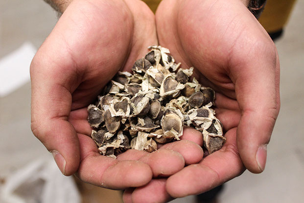

<
>
The bat creaks as it hits the ball. First base, the couch. Second, the table. A middle schooler runs through the house. He made the bat himself, he says, customizing the stick to his hand. A cyclone of brothers follow him. With five boys, things get broken. Adrian Lievano, an Engineering senior, cracks the smallest smile as he shares this memory of his childhood in Miami.
It’s hard to imagine Adrian as a child when he straightens his suit jacket while sitting in a plush Houston Hall armchair. He would have worn sweats, he joked, but had just come from meeting Amy Gutmann. In his nearly four years at Penn, Adrian has accomplished more than most can imagine. This year alone, he won the Pennvention Award for his senior design engineering project, BionUx, and the President’s Engagement Prize for a second project.
To the non-engineer, the mere thought of understanding exactly what Adrian is working on can be complex. One project, in layman’s terms, is a prosthetic arm called BionUx, which uses 3-D printing technology and the technological research that mimics touch. This is a fancy way to say he is constructing an arm designed for amputees to help feel their environment.
When Adrian explains it, he picks up the bottle of Honest Tea he’s been sipping and says, “Touch is important. We have so much sensation we wanted to recreate.” He loosened the grip on the bottle and let it slip through his fingers.
The arm will be equipped with custom sensors that record everyday information to mimic a sense of touch, he explained with a sense of ease. When asked about how all of this is possible in under a year, Adrian simply replied: “Funds are easy to raise. A lot of people want to help.”
Adrian’s partner is Engineering senior Matt Lisle, president of Penn ADAPT, a club dedicated to making different versions of prosthetics for amputees. The arm is only one of two projects Adrian and Matt are tackling together. Adrian recalled watching a video of children running to drink out of a dirty puddle. “It broke my heart,” he said earnestly. Now several months later, he is planning his move with Matt to Kimana, Kenya, in a little over 6 months. They’re using their Engagement Prize money to bring a cheap and effective way to supply up to 300 clean gallons of drinking water a day to a village in the area.
When it comes to water filtration, Matt and Adrian are using a method of adding organic filterants to remove bacteria and dirt that has proven effective in small batches. Adrian hopes to prove it will work on a large scale. Though he said that “things in nature don’t always scale up linearly,” he admits that he thinks it will work. “Matt is more practical, I am more optimistic.”
Adrian’s accomplishments in the field of engineering are staggering to many, but he is the first to humbly point out that he is part of team of what he called “five crazy talented engineers.” He recalled one occasion when he was in the Engineering Quad for 48 hours straight trying to make a small robot follow a puck, but quickly added, “You see this in engineering all the time.”
Adrian’s teammates only speak kindly of him. “He’s incredibly eager to learn. He always asks questions about the work I do on the software and electronics,” said Engineering senior Aadithya Prakash, who goes by Aadu. “It’s crazy how well-rounded he is in all disciplines of engineering. ... He’s such a good engineer.”
Fellow senior design teammate and Engineering senior Steven Xing put it succinctly: “He’s an energetic dude.”
TURNING THE GEARS
Adrian has found his new family at Penn, but still keeps his family at home close.
For Adrian, family has always been essential. Growing up as the third of six siblings in an 11-person house, Adrian is used to having a “wolf pack,” as he describes it.
Before he was constructing mechanical arms, Adrian and his brothers were fixing broken Nintendo DSs and wood working around the house. Though his father, his grandfather and his two older brothers practiced law, Adrian had his sights set on a different path. “I wanted to make things to make you hear better or see better or what if we could manipulate these cells,” he said. Adrian switched from studying bioengineering to mechanical engineering at Penn after seeing “guys in the shop turning the gears and cutting up aluminum and making all these cool things.”
Adrian’s deep love of his family is obvious, but his memory of his neighborhood is more scattered. “I grew up hating school, mostly because of the neighborhood I grew up in. It’s not really focused on giving kids an education,” Adrian said. “I grew up thinking, why am I doing this? Why study math? I wasn’t interested.”
“I was the kid in middle school that all the teachers hated,” he joked.
In high school, Adrian had never heard of Penn. He just assumed he would go to the University of Miami like his older brothers and many classmates. That was until Posse. The Posse Foundation works with students overlooked in traditional college selection processes and supplies them with scholarships and support to get them into universities. As part of the Posse group from South Florida, Adrian and nine others went to Penn. As Adrian puts it, he “just landed here.”
For Adrian, education is all about passion. He insists that he couldn’t commit to any job or responsibility if he lacked passion for it. “Adrian is incredibly passionate about anything he does. He doesn’t half-ass anything,” said his teammate Aadu.
Adrian smiled as he told an embarrassing story about a time Aadu dropped a lithium battery onto a circuit and with a “puff of smoke that engineers just know means the death of their circuit.” He shared it with the feel of someone who deeply cares for the people of the team and not just the work.
All of Adrian’s stories end with people instead of work. When speaking about his prosthetic arm, he wound up talking about an eight-year-old amputee, also named Matt, who received a version of the arm. The team got someone to paint a Yankees symbol on the arm because Matt loves baseball, Adrian said. With the added grip, maybe some day Matt will be able to make his own bat and play baseball through his house.
Adrian also recalled a trip to China after his freshman year. He went to make ankle-foot prosthetics for children with cerebral palsy. “They come in limping and they put it on and they just start running around and playing games,” he remembered.
For all the attention Adrian is getting between arms and water, he does not think he is saving the world. Even after all the excitement, he remains humble. “Tech changes everything in society: the iphone, fire, 3-D printing,” he said. “I am grateful that people are excited about it.”
For Adrian, this is only the beginning. “I see myself going more into policy, education, sustainable development,” he mused. Next year, Adrian will spend six months in Philadelphia and then six months in Kenya, but after that, time will only tell were Adrian’s passions lead him to next.
Adrian is motivated by a simple but important notion to “try to make things better.” This is not remarkable to him, but maybe that’s the point. Adrian is remarkable not only in his approach, not only in his accomplishments, but also in his thought process. “An engineer doesn’t have to be someone who studies engineering. ... All it takes is persistence and willingness to tackle a hard problem,” he said. “You just have to think like an engineer.”
It’s hard to imagine what it’s like to think like Adrian.
“I grew up hating school, mostly because of the neighborhood I grew up in. It’s not really focused on giving kids an education. I grew up thinking, why am I doing this? Why study math? I wasn’t interested.”
-Adrian Lievano